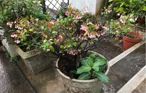
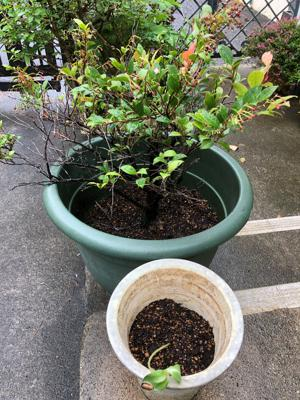
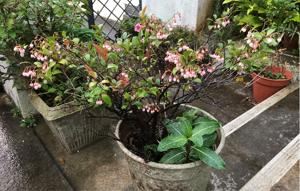
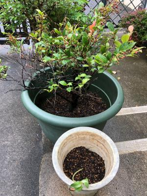

うるがいの話 ある日
最新: 植え替え【うるがいの話 ある日】とは 一日だけのプログです
『うるがいの話』の最新一日だけのプログで、通信料が少なく経済的だ。カニの画像をクリックすると全ての日付が載る『うるがいの話』サイトを表示します
|
|
【うるがいの話】 うるがい(ｳﾙｶﾞｲ urugai)とは、『もずくがに』の名前でとても大きくなります。 |
|---|---|
|
|
【カミマヤーの話】 猫のことを方言でマヤーといいます。カミマヤー（kamimayaa）とは、神の猫のことです。 |
|
【たながぁの音楽】 たながぁ（ﾀﾅｶﾞｰtanagaa）とは手長えびのことで、何種類かあり大きいのは車 エビぐらいになります。 |

|
【ぶながぁの話】 ぶながー(bunagaa)とは、赤い髪の毛、赤い身体、そして身長は１ｍ２０ｃｍ ぐらい、川の蟹を食べているの目撃された。場所は沖縄県国頭郡大宜味村のと ある村僕の隣近所に住んでいる爺さんから、聞いた話です。 |
|
|
【ギーマの話】 ギーマ(giima)とは、山原の里山に咲くスズランに似た、 花を付けます。実は食べられます、 気が付くと口の周りが紫になっています。 |
2022年05月02日 (月）植え替え
16:12
 



朝、庭にでると雨が降っている。傘をかぶりながら、昨日植え替えた鉢をみる
昨日植え替えして良かった。ギーマの木が、元気が無くなっていたのでなんと
かしなければとズーと気にかけやっと重い腰を上げ、午前中に少し小雨が降る
中を割りばしで根っこについた古い土を払いながら、新しい綺麗な土を入れ綺
麗にする。元気になるといいのだが。ゴールデンウィーク期間中であるが、今
日は、祝祭日でない月の始めの営業日である。この日は休めない仕事があった
のため、現役の頃は休んだ事がない（多分）。と、思いながら寒さが戻った小
雨が少し降る外の景色をみる。
１６時０７分 ビットコインの総資産 ￥１４、６９１↑